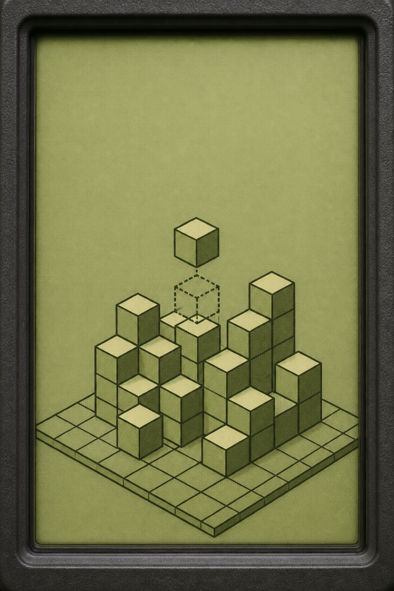

손가락이 가리키는 네모 판에서 칸을 한 번 탭하면 그 칸이 켜져요. 지금은 시간이 멈춰 있어요.

1. 아래 네모 판의 칸을 탭하면 켜져요. 위 그림에서 지금 층에 쌓기나무가 있는 칸만 켜요.
2. 앞 칸에 가려져 안 보이는 칸도 그 층에 있으면 켜야 해요. 아래층이 꺼져 있으면 위층 칸은 안 켜져요.
3. 「잠금까지」 막대가 다 차면 그 층이 그대로 잠겨요. 틀리면 켰어야 하는 칸이 점선으로, 껐어야 하는 칸이 ✕로 나와요.
4. 위에서 본 모양은 위쪽이 앞쪽, 오른쪽에서 본 모양은 앞쪽이 왼쪽이에요. 세 층을 틀리면 우물이 닫혀요.